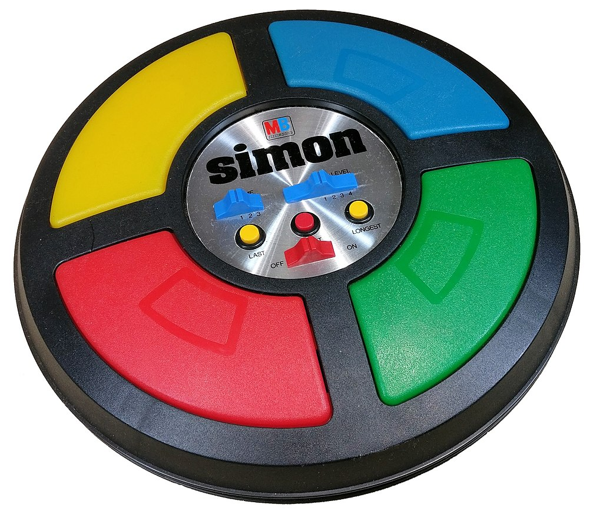

|
Simon is an electronic game of short-term memory skill invented by Ralph H.
Baer and Howard J. Morrison, working for a toy design firm Marvin Glass and
Associates, with software programming by Lenny Cope. The device creates a
series of tones and lights and requires a user to repeat the sequence. If the
user succeeds, the series becomes progressively longer and more complex. Once
the user fails or the time limit runs out, the game is over. The original version
was manufactured and distributed by Milton Bradley and later by Hasbro after it took
over Milton Bradley. Much of the assembly language code was written by Charles
Kapps,[citation needed] who taught computer science at Temple University and also
wrote one of the first books on the theory of computer programming.
Simon was launched in 1978 at Studio 54 in New York City and was an immediate success,
becoming a pop culture symbol of the 1970s and 1980s.
Read more from WikiPedia
|

|